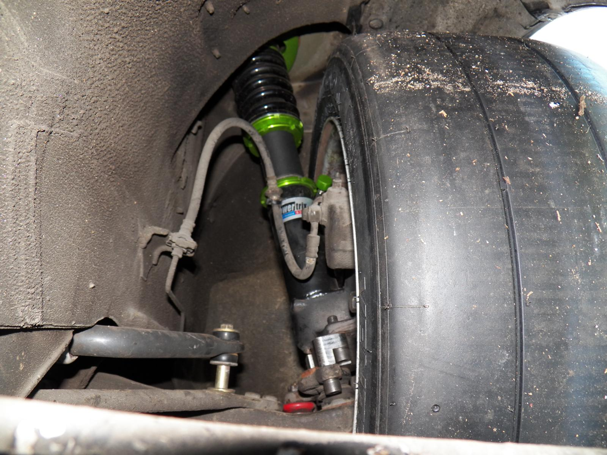
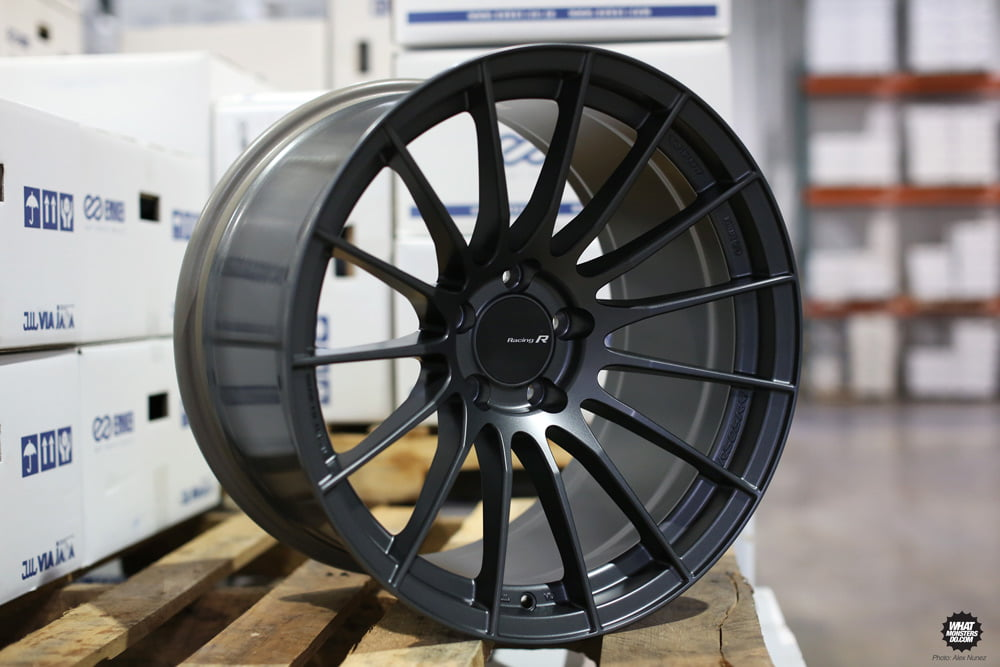

-
The benefit of the Michelin Pilot Super Sport is that they are better suited for what I will be driving the car on - mostly street and perhaps on the track next summer. If the 255/35's don't fit without a spacer, then at least
I have the option of the 245/35's in this style. -
If you have to use a spacer, it isn't going to be because of the TIRES, but rather the WHEELS which are already bought. Buy away. If it doesn't fit, make it fit.... you are overthinking this big time.
Test fit just the wheels and see how much space there is between the strut body and the wheel itself. As long as you aren't getting tires that bulge past the wheel, they won't make fitment worse on that side. They will make the fender-to-tire distance shorter, but you are on stock suspension and your wheels aren't crazy low offset, so I doubt that will be an issue.

16x8.5 +11 with 245/45/16. I'm on Powertrix coilovers, kouki spindles, and G-E's offset bumpsteer spacer.
Note that the closest point to the coilover body is the wheel inner edge.
IMO, do at least a 245 width on the 9" wheels. But compound matters a lot for grip too. A 235 Direzza ZII tire will stick a lot more than a 255 in some other junk. Using Direzza's for street driving seems a little wasteful though because it is an expensive/soft tire. -
I've decided to downgrade from the Dunlop Direzza ZII 255/35/R18 tire to the Michelin Pilot Super Sport 255/35/R18. They will last longer, by the way these are available in 245/35R18 what do u think? -
I think you should stop asking so many questions and just buy everything and fit it up.
I also think you should get some better springs than OEM. Eibach will "lower" your car, but sagging OEM springs vs brand new Eibach's are not going to be that different in the static department.
Dynamically they put the OEMs to shame, and to me what they should have been from factory and will match week with your tokico dampers.
If you haven't done so already:
Poly rear x-member bushings
Poly transmission bushing
Poly rear differential busing
And I would get some front camber plates. Z31s need much more static camber being macpherson that what stock comes with.86na - BlueZ
Shiro #366 - Kouki Monster
85t - Mr Tickles -
I have a set of springs installed that were made for Dan Blaske of TSS which are suppose to be stiffer than the 88's - which I also have, sitting in a box with less than 500 miles on them. -
They only need significant extra static camber in the sense that it affects turning camber (what you want more of), using camber plates oriented axially to become caster plates would allow more turning camber without adding static camberadamvann3;n764873 wrote: And I would get some front camber plates. Z31s need much more static camber being macpherson that what stock comes with.
Alternately, my roll center adjusters add to both static and turning camber -
What lip is that? -
I didn't want to start a new thread and i didn't want to bring one up but I have a similar question and i'm losing sleep over it. I'm in the market for new wheels and tires. Black RPF1 18*9.5 et 15 caught my eye with 275/35 -ish tires. I don't want spacers/adapters, I want them the same size all around front and back and they can't stick out (europe). I have stance coilovers. Will they fit? After doing some research and punching in different combos, I can't get a straight answer. I will ship this set to Poland, hence the importance of getting the right size without test fitting. Racin jitter had battles this same size, shamwow also but with spacers. Who should i contact?
lol- car is 88 2+2 turboCOMMAND AWESOME -
Don't get rpf1's they don't look so good on the z31… rp03, pf01, kojin, etc… lots of nicer ones available -
I do agree that rpf1s aren't ideal but they weigh a lot less than other wheels and are legit. I still want to do the 186 mph run, possibly this year, I graduated last year and saving up monies;] Fitment is my biggest concern, I am still checking out different styles, but style is not on top of my list, I'm more of a function>form guy.COMMAND AWESOME -
18x9.5 et 15 will rub the front coilover. Stuffing a 275/35 in their is also a lot to be asking.DavidA;n769744 wrote: I didn't want to start a new thread and i didn't want to bring one up but I have a similar question and i'm losing sleep over it. I'm in the market for new wheels and tires. Black RPF1 18*9.5 et 15 caught my eye with 275/35 -ish tires. I don't want spacers/adapters, I want them the same size all around front and back and they can't stick out (europe). I have stance coilovers. Will they fit? After doing some research and punching in different combos, I can't get a straight answer. I will ship this set to Poland, hence the importance of getting the right size without test fitting. Racin jitter had battles this same size, shamwow also but with spacers. Who should i contact?
lol- car is 88 2+2 turbo
You can run 18x9.5 et 15 with spacers no problem. Some camber (which you should already be running) and rolled fenders you can fit 275/35s. Its your decision I wanting to run spacers/adapters, but you will be hard pressed finding an off the shelf wheel aggressive enough without ordering something special.
GE,
RPF1s look good on everything. Especially in SBC finish. I just picked up a set of 17x9.5 and 10.5 to either run on any of my vehicles. Hard to beat the performance, price and looks.86na - BlueZ
Shiro #366 - Kouki Monster
85t - Mr Tickles -
i'm looking at 1" spacers aren't I?COMMAND AWESOME -
My only complaint with enkei's lineup, is it's not easy to make the same set between models, ie. keeping same offsets and widths for a staggered setup
I really wanted the pf01, but I chose kojin for it's more subdued look -
I would have liked a set of the new RS05RR's. I priced them out, somewhere enkei decided to price their new MAT type wheels in the same category as Volks.........
86na - BlueZ
Shiro #366 - Kouki Monster
85t - Mr Tickles -
No, more like a 15mm spacer or 17mm if you want to be just a tad more aggressive. 1" would be too much though to fit 275/35's. I was looking to run a similar setup.87 300ZX: VG33ET, 30a, Bilsteins/Eibachs, Stance tension rods, MSA sway bars, Cusco strut braces, ASCO Camber plates, RCA's and motor mounts, poly everything else.

Copyright © 2006–. All rights reserved. Privacy Policy